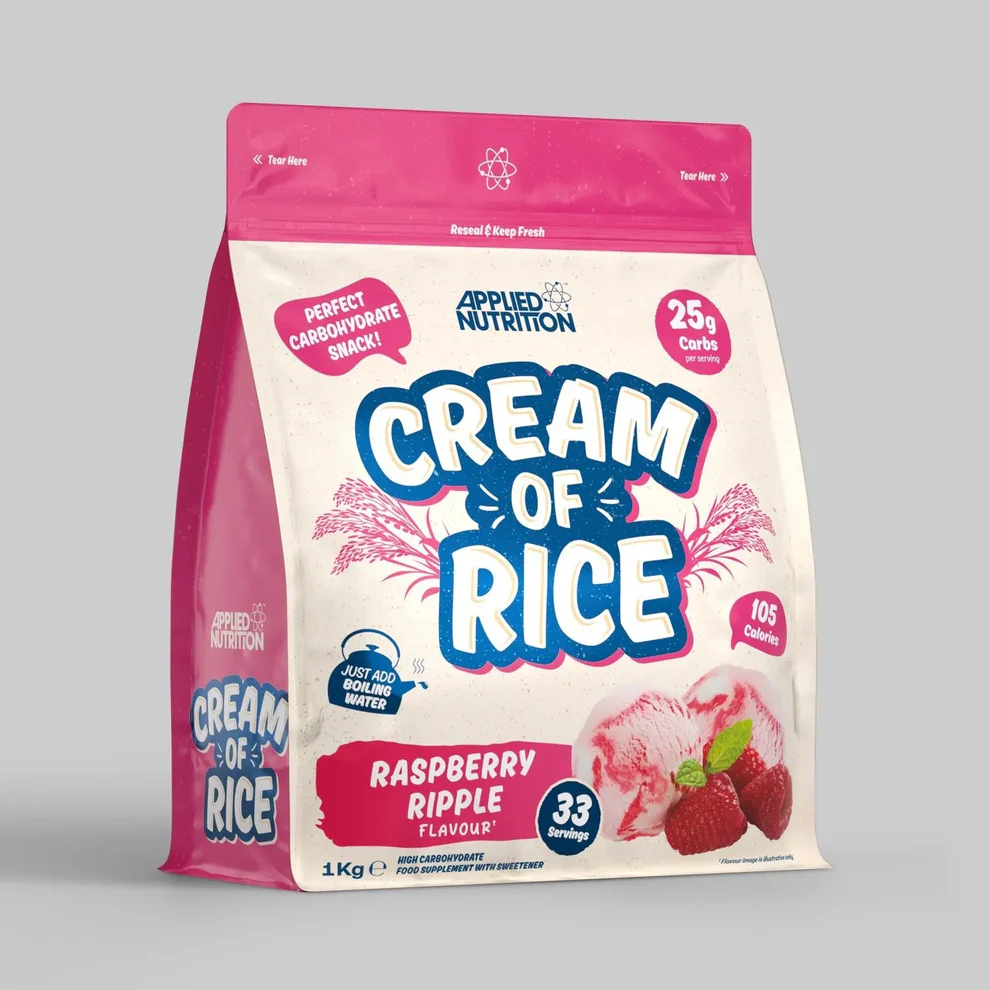

En stockCrème de riz - Framboise Ripple (1 kg)
Description
40,00 €
La Crème de Riz Applied Nutrition Framboise Ripple est une solution idéale pour apporter des glucides de qualité avant ou après l'entraînement. Sa texture légère et sa délicieuse saveur framboise permettent de varier facilement vos repas et collations.
Facile à préparer, elle s'intègre parfaitement dans un programme nutritionnel orienté vers la performance ou la prise de masse.
- Source de glucides.
- Préparation instantanée.
- Saveur framboise.
- Très digeste.
- Format 1 kg.
A savoir
Utilisation suggérée
Mélanger une portion avec de l'eau chaude ou du lait jusqu'à obtenir une texture crémeuse.